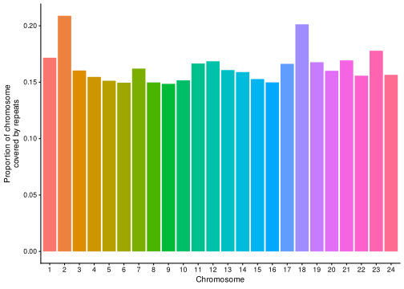

Repeats
<<<<<<< HEAD:docs/20210409_repeats.html2021-04-13
=======2021-06-24
>>>>>>> d578d3e192ac0e62ef0cbb2ecd89f3d4e8720204:docs/20210301_repeats.html1 Setup
1.1 Load libraries
library(here)
source(here::here("code", "scripts", "repeats", "source.R"))Working directory on EBI cluster: /hps/research1/birney/users/ian/mikk_paper
1.2 Get Jack’s data
Jack’s directory here: /nfs/leia/research/enright/jack/10_medaka_fish/02_genome_repeats/repeatmasker_filtered/medaka_hdrr
# Create directory for repeats work
mkdir repeats
# Pull data over from Jack's repo via local
scp brettell@yoda:/nfs/leia/research/enright/jack/10_medaka_fish/02_genome_repeats/repeatmasker_filtered/medaka_hdrr/processed/medaka_hdrr_repeats.fixed.gff ~/Documents/Repositories/mikk_genome/data
scp ~/Desktop/medaka_hdrr_repeats.fixed.gff brettell@ebi:/hps/research1/birney/users/ian/mikk_paper/repeats1.3 Read in data and clean
# Read in data
hdrr_reps = read.table(here("data", "20201126_medaka_hdrr_repeats.fixed.gff"),
header = F, sep = "\t", skip = 3, comment.char = "", quote = "", as.is = T) %>%
# Remove empty V8 column
dplyr::select(-V8) %>%
# Get class of repeat from third column
dplyr::mutate(class = stringr::str_split(V3, pattern = "#", simplify = T)[, 1]) %>%
# Rename columns
dplyr::rename(chr = V1, tool = V2, class_full = V3, start = V4, end = V5, percent = V6, strand = V7, info = V9)
knitr::kable(head(hdrr_reps))| chr | tool | class_full | start | end | percent | strand | info | class |
|---|---|---|---|---|---|---|---|---|
| 1 | RepeatMasker | DNA#P | 54 | 131 | 14.5 | - | Target “Motif:rnd-4_family-856” | DNA |
| 1 | RepeatMasker | Unknown | 85 | 144 | 16.7 | + | Target “Motif:rnd-6_family-210” | Unknown |
| 1 | RepeatMasker | SINE#tRNA-Core-RTE | 789 | 866 | 19.5 | + | Target “Motif:rnd-6_family-2543” | SINE |
| 1 | RepeatMasker | (CA)n | 921 | 947 | 12.2 | + | Target “Motif:(CA)n” | (CA)n |
| 1 | RepeatMasker | LINE#L2 | 4464 | 4596 | 26.9 | + | Target “Motif:DF0004089_LINE/L2” 959 1101" | LINE |
| 1 | RepeatMasker | LINE#L2 | 4478 | 4599 | 28.7 | + | Target “Motif:DF0003433_LINE/L2” 1011 1141" | LINE |
# Find types of class other than "(GATCCA)n" types
class_types = unique(hdrr_reps$class[grep(")n", hdrr_reps$class, invert = T)])
class_types[1] “DNA” “Unknown” “SINE” “LINE” “LTR” “Simple_repeat” “Satellite”
[8] “RC” “tRNA” “rRNA” “Retroposon” “snRNA” "" “buffer”
[15] “ARTEFACT” “scRNA”
[1] “DNA” “Unknown” “SINE” “LINE” “LTR” “Simple_repeat” [7] “Satellite” “RC” “tRNA” “rRNA” “Retroposon” “snRNA”
[13] "" “buffer” “ARTEFACT” “scRNA”
# How many in the blank class?
length(which(hdrr_reps$class == ""))[1] 8
# Recode class
hdrr_reps = hdrr_reps %>%
# NA for blanks
dplyr::mutate(class = dplyr::na_if(class, "")) %>%
# "misc" for others in "(GATCCA)n" type classes
dplyr::mutate(class = dplyr::if_else(!class %in% class_types, "Misc.", class)) %>%
# rename "Simple_repeat"
dplyr::mutate(class = dplyr::recode(class, "Simple_repeat" = "Simple repeat"))
knitr::kable(head(hdrr_reps))| chr | tool | class_full | start | end | percent | strand | info | class |
|---|---|---|---|---|---|---|---|---|
| 1 | RepeatMasker | DNA#P | 54 | 131 | 14.5 | - | Target “Motif:rnd-4_family-856” | DNA |
| 1 | RepeatMasker | Unknown | 85 | 144 | 16.7 | + | Target “Motif:rnd-6_family-210” | Unknown |
| 1 | RepeatMasker | SINE#tRNA-Core-RTE | 789 | 866 | 19.5 | + | Target “Motif:rnd-6_family-2543” | SINE |
| 1 | RepeatMasker | (CA)n | 921 | 947 | 12.2 | + | Target “Motif:(CA)n” | Misc. |
| 1 | RepeatMasker | LINE#L2 | 4464 | 4596 | 26.9 | + | Target “Motif:DF0004089_LINE/L2” 959 1101" | LINE |
| 1 | RepeatMasker | LINE#L2 | 4478 | 4599 | 28.7 | + | Target “Motif:DF0003433_LINE/L2” 1011 1141" | LINE |
2 Plot
# How many repeats in each category?
hdrr_reps %>%
count(class) %>%
knitr::kable(.)| class | n |
|---|---|
| ARTEFACT | 5 |
| buffer | 6 |
| DNA | 242470 |
| LINE | 99678 |
| LTR | 61127 |
| Misc. | 270752 |
| RC | 4342 |
| Retroposon | 177 |
| rRNA | 1327 |
| Satellite | 3094 |
| scRNA | 1 |
| Simple repeat | 4582 |
| SINE | 5747 |
| snRNA | 172 |
| tRNA | 1810 |
| Unknown | 198157 |
2.1 Circos
2.1.1 Clean data
# Exclude classes with very few counts
excluded_classes = c("ARTEFACT", "buffer", "scRNA", "snRNA")
plot_list = hdrr_reps %>%
dplyr::mutate(chr = paste("chr", chr, sep = ""),
chr = factor(chr, levels = chr_order),
strand = factor(strand, levels = strand_order)) %>%
dplyr::filter(!class %in% excluded_classes) %>%
# dplyr::filter(strand == "+") %>%
# dplyr::slice_sample(n = 20000) %>%
# sort
dplyr::arrange(class, strand, chr, start) %>%
# get length and log length of repeats
dplyr::mutate(length = end - start + 1,
log_length = log(length)) %>%
dplyr::select(chr, start, end, strand, class, length, log_length) %>%
# remove the couple of rows with NA in `chr` column
na.omit(.)
# Get max lengths for each class (rounded up to the nearest 1000)
max_lengths_df = plot_list %>%
dplyr::group_by(class) %>%
dplyr::summarise(max = round.choose(max(length), 1e3, dir = 1)) %>%
dplyr::arrange(desc(max))
max_lengths = max_lengths_df %>%
dplyr::pull(max)
class_order = max_lengths_df %>%
dplyr::pull(class)
# Change order for best
class_order = c("Misc.",
"LINE",
"DNA",
"LTR",
"Unknown",
"RC",
"Satellite",
"rRNA",
"Simple repeat",
"SINE",
"tRNA",
"Retroposon")
# Order by longest repeats
plot_list = plot_list %>%
dplyr::mutate(class = factor(class, levels = class_order))
# Split by class and strand
plot_list = plot_list %>%
split(., .$class) %>%
lapply(., function(class){
out = split(class, class$strand)
return(out)
})2.1.2 Convert reverse strand densities to negative values for plotting
plot_list = lapply(plot_list, function(class){
lapply(class, function(strand){
strand %>%
dplyr::mutate(length = ifelse(strand == "-",
length * -1,
length)) %>%
# choose target values
dplyr::select(chr, start, end, length)
})
})
# True
test = plot_list2.1.3 Save plot
out_plot = here::here("plots", "repeats", "20210302_hdrr_repeats_true.png")
png(out_plot,
width = 20,
height = 20,
units = "cm",
res = 400)
# Choose palette
pal = grDevices::colorRampPalette(pal_electroangler)(length(test))
# Set parameters
## Decrease cell padding from default c(0.02, 1.00, 0.02, 1.00)
circos.par(cell.padding = c(0, 0, 0, 0),
track.margin = c(0, 0),
gap.degree = c(rep(1, nrow(chroms) - 1), 11))
# Initialize plot
circos.initializeWithIdeogram(chroms,
plotType = c("axis", "labels"),
major.by = 1e7,
axis.labels.cex = 0.25*par("cex"))
counter_class = 0
lapply(test, function(class){
# set counter_class
counter_class <<- counter_class + 1
# set max ylim
max_length = max_lengths[counter_class]
counter = 0
lapply(class, function(strand){
# Set counter
counter <<- counter + 1
# Set y-limits for both strands
if (names(class)[counter] == "+"){
ylim = c(0, max_length)
}
else if (names(class)[counter] == "-"){
ylim = c(-max_length, 0)
}
# Add track
circos.genomicTrack(strand,
panel.fun = function(region, value, ...) {
circos.genomicLines(region,
value,
type = "h",
col = pal[counter_class],
cex = 0.05,
baseline = 0)
},
track.height = 0.03,
ylim = ylim,
bg.border = NA)
# Add labels
if (names(class)[counter] == "+"){
# y-axis
circos.yaxis(side = "right",
at = ylim,
labels.cex = 0.2*par("cex"),
tick.length = 2
)
# strand
circos.text(0, max_length / 2,
labels = "+",
sector.index = "chr1",
cex = 0.4*par("cex"))
} else if (names(class)[counter] == "-"){
# strand
circos.text(0, -(max_length / 2),
labels = "-",
sector.index = "chr1",
cex = 0.4*par("cex"))
# repeat class
circos.text(0, 0,
labels = names(test)[counter_class],
facing = "clockwise",
adj = c(0.5, -0.5),
sector.index = "chr1",
cex = 0.25*par("cex"))
}
})
})
circos.clear()
dev.off()knitr::include_graphics(here::here("plots", "repeats", "20210302_hdrr_repeats_true.png"))
2.1.3 Save plot
out_plot = here::here("plots", "repeats", "20210302_hdrr_repeats_true.png")
png(out_plot,
width = 20,
height = 20,
units = "cm",
res = 400)
# Choose palette
pal = grDevices::colorRampPalette(pal_electroangler)(length(test))
# Set parameters
## Decrease cell padding from default c(0.02, 1.00, 0.02, 1.00)
circos.par(cell.padding = c(0, 0, 0, 0),
track.margin = c(0, 0),
gap.degree = c(rep(1, nrow(chroms) - 1), 11))
# Initialize plot
circos.initializeWithIdeogram(chroms,
plotType = c("axis", "labels"),
major.by = 1e7,
axis.labels.cex = 0.25*par("cex"))
counter_class = 0
lapply(test, function(class){
# set counter_class
counter_class <<- counter_class + 1
# set max ylim
max_length = max_lengths[counter_class]
counter = 0
lapply(class, function(strand){
# Set counter
counter <<- counter + 1
# Set y-limits for both strands
if (names(class)[counter] == "+"){
ylim = c(0, max_length)
}
else if (names(class)[counter] == "-"){
ylim = c(-max_length, 0)
}
# Add track
circos.genomicTrack(strand,
panel.fun = function(region, value, ...) {
circos.genomicLines(region,
value,
type = "h",
col = pal[counter_class],
cex = 0.05,
baseline = 0)
},
track.height = 0.03,
ylim = ylim,
bg.border = NA)
# Add labels
if (names(class)[counter] == "+"){
# y-axis
circos.yaxis(side = "right",
at = ylim,
labels.cex = 0.2*par("cex"),
tick.length = 2
)
# strand
circos.text(0, max_length / 2,
labels = "+",
sector.index = "chr1",
cex = 0.4*par("cex"))
} else if (names(class)[counter] == "-"){
# strand
circos.text(0, -(max_length / 2),
labels = "-",
sector.index = "chr1",
cex = 0.4*par("cex"))
# repeat class
circos.text(0, 0,
labels = names(test)[counter_class],
facing = "clockwise",
adj = c(0.5, -0.5),
sector.index = "chr1",
cex = 0.25*par("cex"))
}
})
})
circos.clear()
dev.off()knitr::include_graphics(here::here("plots", "repeats", "20210302_hdrr_repeats_true.png"))
2.2 Coverage of region by repeats
# Get sequence of start to end for each chr
cov_list = hdrr_reps %>%
dplyr::filter(chr != "MT") %>%
dplyr::mutate(chr = factor(chr, levels = 1:24)) %>%
split(., f = .$chr)
#
tmp = lapply(cov_list, function(chr){
apply(chr, 1, function(x){
seq(x[["start"]], x[["end"]])
}) %>%
unlist(.) %>%
sort(.) %>%
unique(.) %>%
length(.)
})
repeat_cov = data.frame(CHR = names(tmp),
REP_COV = unlist(tmp))
repeat_cov = repeat_cov %>%
dplyr::filter(is.na(CHR) == F) %>%
dplyr::mutate(CHR = paste("chr", CHR, sep = "")) %>%
dplyr::full_join(y = chroms, by = c("CHR" = "chr")) %>%
dplyr::mutate(CHR = str_replace(CHR, "chr", ""),
CHR = factor(CHR, levels = 1:24)) %>%
dplyr::select(CHR, START = start, END = end, REP_COV) %>%
dplyr::mutate(REP_PROP = REP_COV/END)Plot
repeat_cov_plot = repeat_cov %>%
ggplot() +
geom_col(aes(CHR, REP_PROP, fill = CHR)) +
theme_cowplot(font_size = 10) +
guides(fill = F) +
xlab("Chromosome") +
<<<<<<< HEAD:docs/20210409_repeats.html
ylab("Proportion of chromosome\ncovered by repeats")
repeat_cov_plot 
2.3 Histograms of log repeat length
pal = grDevices::colorRampPalette(pal_electroangler)(length(plot_list))
hist_df = lapply(plot_list, function(class){
dplyr::bind_rows(class, .id = "strand")
}) %>%
dplyr::bind_rows(.id = "class") %>%
dplyr::mutate(class = factor(class, levels = class_order),
length = ifelse(length < 0, length * -1, length))
hist_plot = hist_df %>%
ggplot(aes(x = log10(length),
# remove values under 0 created by the log10
y = ifelse(log10(..count..) < 0,
0,
log10(..count..)),
fill = class,
colour = class)) +
geom_area(stat = "bin",
bins = 20) +
# geom_freqpoly(aes(colour = class)) +
facet_wrap(~class, nrow = 3, ncol = 4) +
scale_fill_manual(values = pal) +
scale_colour_manual(values = karyoploteR::darker(pal)) +
guides(fill = F) +
guides(colour = F) +
xlab(expression(log[10](length))) +
ylab(expression(log[10](count))) +
theme_cowplot(font_size = 10) +
theme(strip.background = element_blank())
hist_plot
2.4 Compile into final figure
circos_repeats_path = here::here("plots", "repeats", "20210302_hdrr_repeats_true.png")
final_svtype = ggdraw() +
draw_image(circos_repeats_path,
x = 0, y = 0, width = 1, height = .75, scale = 1.12) +
draw_plot(repeat_cov_plot,
x = 0, y = .75, width = .4, height = .25) +
draw_plot(hist_plot,
x = .4, y = .75, width = .6, height = .25) +
draw_plot_label(label = c("A", "B", "C"), size = 25,
x = c(0, .39, 0), y = c(1, 1, .75),
hjust = c(-.25, 0, -.25),
color = "#4f0943")
final_svtype
ggsave(here::here("plots", "repeats", "20210401_hdrr_repeats_final.png"),
device = "png",
dpi = 400,
units = "cm",
width = 30,
height = 42)## Warning: `guides(<scale> = FALSE)` is deprecated. Please use `guides(<scale> = "none")` instead.repeat_cov_plot 2.3 Histograms of log repeat length
pal = grDevices::colorRampPalette(pal_electroangler)(length(plot_list))
hist_df = lapply(plot_list, function(class){
dplyr::bind_rows(class, .id = "strand")
}) %>%
dplyr::bind_rows(.id = "class") %>%
dplyr::mutate(class = factor(class, levels = class_order),
length = ifelse(length < 0, length * -1, length))
hist_plot = hist_df %>%
ggplot(aes(x = log10(length),
# remove values under 0 created by the log10
y = ifelse(log10(..count..) < 0,
0,
log10(..count..)),
fill = class,
colour = class)) +
geom_area(stat = "bin",
bins = 20) +
# geom_freqpoly(aes(colour = class)) +
facet_wrap(~class, nrow = 3, ncol = 4) +
scale_fill_manual(values = pal) +
scale_colour_manual(values = karyoploteR::darker(pal)) +
guides(fill = F) +
guides(colour = F) +
xlab(expression(log[10](length))) +
ylab(expression(log[10](count))) +
theme_cowplot(font_size = 10) +
theme(strip.background = element_blank())## Warning: `guides(<scale> = FALSE)` is deprecated. Please use `guides(<scale> = "none")` instead.
## Warning: `guides(<scale> = FALSE)` is deprecated. Please use `guides(<scale> = "none")` instead.hist_plot
2.4 Compile into final figure
circos_repeats_path = here::here("plots", "repeats", "20210302_hdrr_repeats_true.png")
final_svtype = ggdraw() +
draw_image(circos_repeats_path,
x = 0, y = 0, width = 1, height = .75, scale = 1.12) +
draw_plot(repeat_cov_plot,
x = 0, y = .75, width = .4, height = .25) +
draw_plot(hist_plot,
x = .4, y = .75, width = .6, height = .25) +
draw_plot_label(label = c("A", "B", "C"), size = 25,
x = c(0, .39, 0), y = c(1, 1, .75),
hjust = c(-.25, 0, -.25),
color = "#4f0943")
final_svtype
ggsave(here::here("plots", "repeats", "20210401_hdrr_repeats_final.png"),
device = "png",
dpi = 400,
units = "cm",
width = 30,
height = 42)